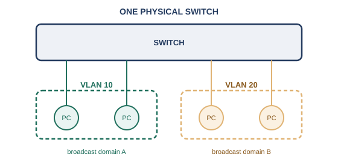
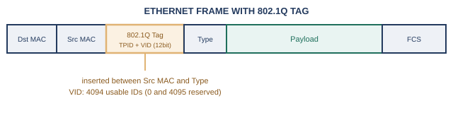
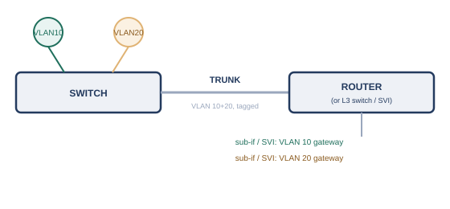

序章では、機器が増えるにつれてコスト圧力が高まり、スイッチを論理的に分割したくなる場面が出てくる、という話をしました。第3章で見たように、L2スイッチはコリジョンドメインをポートごとに分割してくれますが、ブロードキャストドメインまでは分割してくれません。部署やチームが違う機器同士を、ブロードキャストドメインのレベルで分けたい場合、従来の発想では「部署ごとに専用のスイッチを1台ずつ用意する」しかありませんでした。
しかし、これは台数が増えるほどコストがかさみます。各部署の利用率が低くても、スイッチ自体は部署の数だけ必要になりますし、部署間で人員の異動があるたびに、配線を物理的に付け替える手間もかかります。
そこで、「1台の物理スイッチを、ソフトウェア的にいくつかの仮想的なスイッチとして扱えるようにしよう」という発想が生まれました。これがVLANです。1台のスイッチのポートを、VLAN 10、VLAN 20のようにグループ分けしておくことで、まるで別々のスイッチを部署ごとに用意したかのような効果を、1台のハードウェアだけで実現できます。
第3章では、「ブロードキャストドメインを分割できるのは、L3で動作するルータだけです」という説明をしました。実は、この説明には続きがあります。VLANを使うことで、L2スイッチ1台だけでも、ブロードキャストドメインを複数に分割できてしまうのです。

VLANが設定されたポートに届いたブロードキャストフレームは、同じVLANに属する他のポートにしか転送されません。異なるVLANに属するポート同士は、同じ物理スイッチにつながっていても、まるで別のスイッチにつながっているかのように、ブロードキャストが届かない別々の範囲として扱われます。
この仕組みを実現しているのが、IEEE 802.1Qという標準規格です※1。VLANをまたいで複数のスイッチ間でフレームをやり取りする際には、イーサネットフレームの送信元MACアドレスとタイプフィールドの間に、4バイトのVLANタグを挿入します。

このタグの中には、12ビットのVLAN識別子（VID）が含まれており、理論上4096通りの値を表現できますが、0と4095は予約されているため、実際に使えるVLANの数は4094個です※1。スイッチは、このタグを見て「このフレームはどのVLANに属するか」を判断し、同じVLANのポートにだけ転送します。
複数のスイッチにまたがってVLANを構成する場合、スイッチ同士を結ぶ1本のリンクの中に、複数のVLANのフレームを混在させて送る必要が出てきます。この、複数VLANのタグ付きフレームを1本の物理リンクで同時に運ぶ接続を、トランクと呼びます。トランクの反対に、1つのVLANにしか属さない、通常の機器を接続するためのポートは、アクセスポートと呼ばれます。

ここで、第5章で見た内容が生きてきます。異なるVLANは、それぞれ独立したブロードキャストドメイン、つまり別々のネットワーク（別々のサブネット）として設計されるのが普通です。ということは、VLAN 10にいる機器がVLAN 20にいる機器と通信したいときは、第5章で見たルーティングの出番だということです。具体的には、次の2つの構成のどちらかがよく使われます。
いずれの構成でも、「異なるVLAN（＝異なるブロードキャストドメイン）をまたぐ通信には、L3の機器によるルーティングが必要」という原則は変わりません。第3章で述べた「ブロードキャストドメインを分割できるのはルータだけ」という説明は、正確には「1台の物理スイッチの中だけならVLANでも分割できるが、分割したVLAN同士をつなぎ直すには、結局ルータ（相当の機能）が必要になる」という形で、より正確な理解に置き換わったことになります。